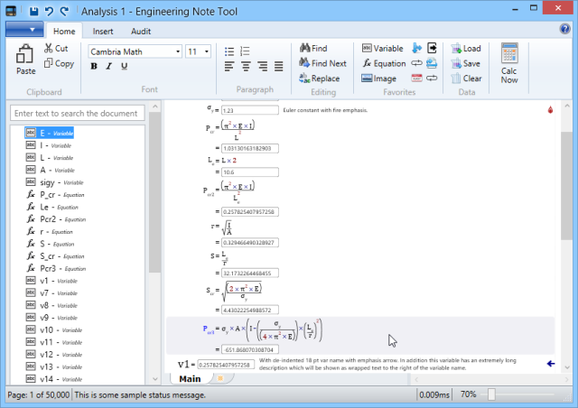
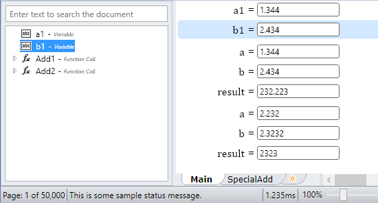
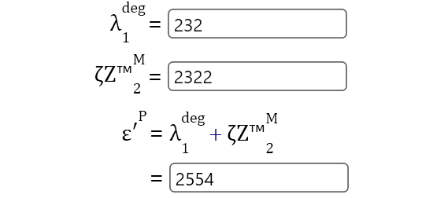
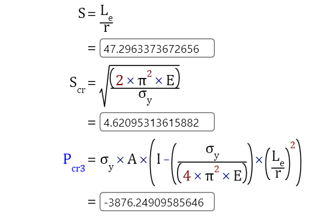
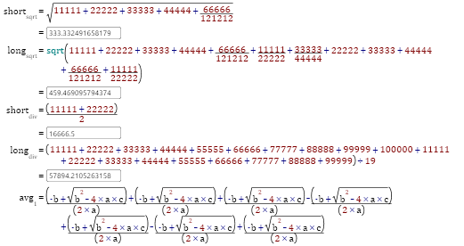
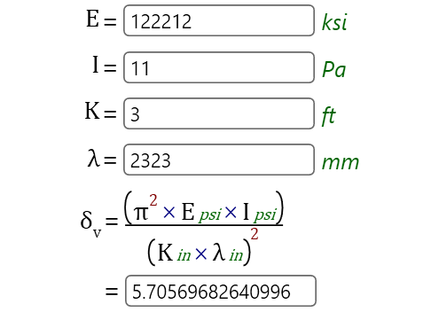
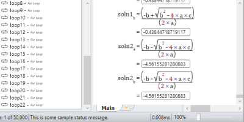
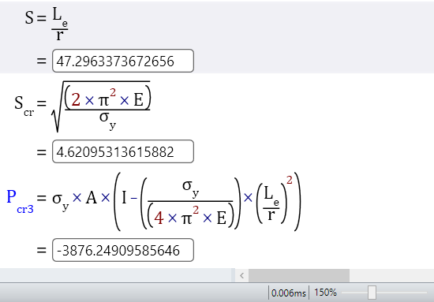

Engineering Note Tool — making it easy and cost effective to create engineering analysis documents.

ENT was originally developed over eight years as an internal aerospace engineering tool before being prepared for commercial release. Development was halted before reaching that goal.
If you are interested in reviving or modernizing the ENT concept for your engineering team, please get in touch.
A high-performance calculation engine capable of computing millions of equations in microseconds, with automatic recalculation as you edit.
Equations that actually solve — not just display. With wrapping support, syntax highlighting, and display name substitution for Greek letters and symbols.
Engineers create reusable, pre-approved functions directly — shareable with colleagues and signable by expert authorities for project compliance.
Intuitive unit handling with automatic conversion between compatible units. Mix formulas from multiple sources and let ENT sort out the conversions.
Full Word document export with automatic sync — as the analysis changes, the exported document updates to match without manual intervention.
Hierarchical team-based security controls, audit review modes, and full traceability of every calculation for regulatory compliance.
Designed from the beginning for optimal memory use without sacrificing performance — handles documents of any size, even 20,000+ pages.
Tabular data with named dimensions and loop statements to iterate over combinations, with auditing features to inspect specific iterations.
Plug-in architecture for custom functions, data importers, and legacy format support. Scripting interface for automation and batch processing.
Engineers create reusable, pre-approved functions with excellent performance and usability. Functions can be shared with colleagues, optimized via custom solvers, and signed by expert authorities for project compliance.


Variables can have optional display names supporting Greek letters, superscript, subscript, and other formatting — keeping variable names short and easy to remember while looking correct in the document.
Equations that actually solve, not just display. With wrapping support, syntax highlighting, and automatic substitution of display names and mathematical symbols.


Long equations automatically wrap when there isn't enough room on the page, keeping the document clean and readable without manual intervention.
Encode units into formulas and ENT automatically converts between compatible units. Mix formulas from multiple sources, specify result units, and let ENT handle the conversions.


A high-performance calculation engine that computes millions of equations in microseconds. Automatic recalculation updates results as you modify the analysis.
Adjustable split between document and outline views, with zoom controls. Choose page size, margins, and orientation — users with large monitors can use multi-column layouts.
